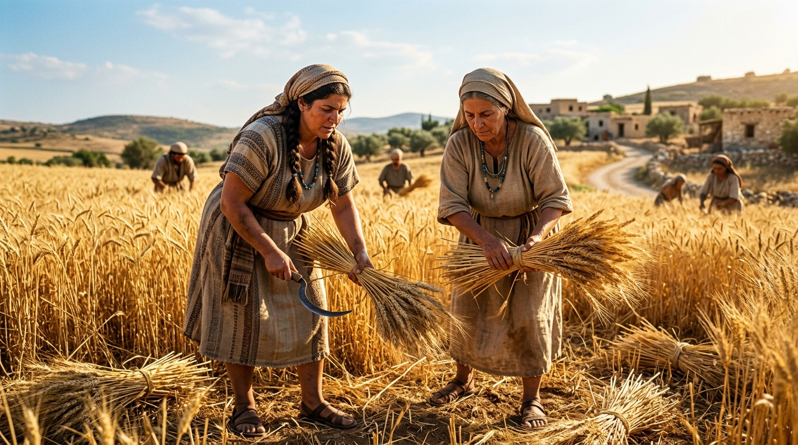

A Coragem Silenciosa e Transformadora: O Papel Central das Mulheres na História da Redenção
Em um mundo antigo caracterizado por estruturas patriarcais severas e por sociedades onde o valor das pessoas era frequentemente medido pela força militar, pelo status político ou pela linhagem masculina, as Escrituras Sagradas destacam-se de forma revolucionária ao registrar o papel central, corajoso e indispensável exercido pelas mulheres na arquitetura do plano divino de redenção. Longe de figurarem como meras coadjuvantes na narrativa bíblica, as mulheres da fé sobressaem-se em momentos de extrema crise nacional, salvando linhagens, desafiando éditos imperiais, demonstrando hospitabilidades salvadoras e ungiando o próprio Messias para a Sua sepultura.
De Sara superando o ceticismo estéril através da promessa divina, passando pela lealdade redentora de Rute em terras estrangeiras, pela astúcia salvífica de Ester nos corredores da Pérsia, até a submissão corajosa de Maria ao conceber o Salvador, a Bíblia valida a dignidade espiritual igualitária de ambos os sexos perante o Criador. Este estudo aprofundado examina a anatomia da fé dessas mulheres extraordinárias, cujas decisões mudaram irrevocavelmente o curso da história sagrada.
Índice do Estudo:
- 1. Sara: Do Riso Cético à Maternidade Milagrosa da Promessa
- 2. Rute e Noemi: Lealdade, Resgate e a Linhagem do Rei Davi
- 3. Ester: A Coragem nos Corredores do Poder Imperial
- 4. Maria de Nazaré: A Submissão Mariana e o Mistério da Encarnação
- 5. A Dignidade da Mulher nas Escrituras: Subvertendo o Padrão Antigo
- 6. Tabela Analítica e Aplicação Existencial das Mulheres da Fé
1. Sara: Do Riso Cético à Maternidade Milagrosa da Promessa
Sara (inicialmente Sarai) acompanha Abraão desde os primórdios da jornada de fé, compartilhando as incertezas do nomadismo e a longa espera pelo herdeiro prometido por Deus. Contudo, a sua biografia humana é marcada pela crueza de sua esterilidade prolongada em uma cultura onde a maternidade representava a honra suprema de uma mulher. Diante do retardamento temporal humanamente incompreensível da promessa, Sara recorre a expedientes culturais da época, entregando sua serva Hagar a Abraão — uma decisão que gerou profundas fraturas e amarguras familiares.
O momento de virada espiritual de Sara ocorre quando os anjos reiteram a promessa de que ela conceberia na velhice, gerando inicialmente um riso de incredulidade interior atrás da tenda. Confrontada pelo Senhor — "Haveria coisa alguma difícil ao Senhor?" —, o coração de Sara transita do ceticismo cínico para a fé reverente. O autor aos Hebreus consagra seu nome na galeria da fé, destacando que ela recebeu poder para ser mãe porque julgou fiel Aquele que havia feito a promessa.
2. Rute e Noemi: Lealdade, Resgate e a Linhagem do Rei Davi
O Livro de Rute apresenta uma das narrativas mais comoventes de providência, lealdade e solidariedade familiar em meio à escuridão espiritual da época dos Juízes. Após perder o marido e os dois filhos em terras de Moabe, a amargurada Noemi decide retornar a Belém, encorajando suas noras a permanecerem em sua terra natal. Enquanto Orfa despede-se chorosa, Rute profere uma das declarações de compromisso mais belas e firmes de toda a Bíblia: "Não me instes para que te deixe, e me obrigue a seguir-te; porque aonde quer que fores, irei eu, e onde quer que pousares, ali pousarei eu; o teu povo é o meu povo, o teu Deus é o meu Deus" (Rute 1:16).
Ao chegar a Belém, a moabita Rute trabalha humildemente nos campos de Boaz, seu parente resgatador (Goel). Através da integridade de Boaz e da fidelidade devota de Rute, Deus transforma a tragédia da viuvez e da pobreza extrema em uma bênção histórica monumental: Rute torna-se bisavó do rei Davi e integra diretamente a árvore genealógica de Jesus Cristo, simbolizando a inclusão antecipada dos gentios na graça redentora.
3. Ester: A Coragem nos Corredores do Poder Imperial
Órfã de origem judaica exilada na Pérsia, Hadassa (Ester) ascende surpreendentemente à posição de rainha ao lado do soberano Assuero (Xexes), ocultando inicialmente sua verdadeira identidade sob a tutoria de seu primo Mardoqueu. Quando um decreto genocida promovido pelo ambicioso primeiro-ministro Hamã ameaça a extermínio total da população judaica em todo o império, Ester defronta-se com o dilema definitivo de sua vida: manter o silêncio e proteger-se nos luxuosos aposentos reais ou arriscar a própria cabeça aproximando-se do trono sem ser chamada.
A resposta de Ester a Mardoqueu — "Se perecer, pereço" — consagra sua figura como um símbolo máximo de coragem estratégica e intercessão. Após convocar o povo a um jejum rigoroso de três dias, Ester apresenta-se com audácia perante o rei, desmascara a conspiração de Hamã e salva seu povo da aniquilação total. Sua vida demonstra como Deus posiciona estrategicamente pessoas de fé em lugares de influência secular para cumprir Seus propósitos soberanos.
4. Maria de Nazaré: A Submissão Mariana e o Mistério da Encarnação
Maria de Nazaré sobressai-se nas Escrituras como a jovem humilde escolhida por graça soberana para carregar em seu ventre o Filho do Altíssimo. Diante da saudação perturbadora do anjo Gabriel anunciando que ela conceberia por obra do Espírito Santo sem intervenção masculina, Maria exibe uma serenidade e uma maturidade teológica impressionantes. Sua resposta — "Eis aqui a serva do Senhor; cumpra-se em mim segundo a tua palavra" — representa o ato definitivo de rendição incondicional ao projeto redentor de Deus, sabendo perfeitamente que tal gravidez fora do casamento expô-la-ia ao opróbrio social, ao repúdio público e ao risco de apedrejamento sob a lei rigorosa.
O Magnificat (o cântico de louvor entoado por Maria durante sua visita a Isabel) revela uma mulher profundamente enraizada nas Escrituras do Antigo Testamento, consciente de que a vinda do Messias subverteria as estruturas orgulhosas do mundo, derribando os potentados de seus tronos e exaltando os humildes. Maria acompanhou toda a jornada terrena de Jesus, sofrendo atrozmente ao pé da cruz, figurando como testemunha ocular da graça que transformaria a humanidade.
5. A Dignidade da Mulher nas Escrituras: Subvertendo o Padrão Antigo
O tratamento dispensado às mulheres ao longo das páginas do Novo Testamento por Jesus de Nazaré constitui uma subversão radical e libertadora dos preconceitos culturais vigentes no mundo judaico e greco-romano da Antiguidade. Jesus conversou publicamente com a mulher samaritana à beira do poço, defendeu a mulher adúltera contra o linchamento legalista, permitiu que mulheres discipulassem sentadas aos Seus pés (como Maria de Betânia) e escolheu mulheres — especificamente Maria Madalena e as demais fiéis — como as primeiríssimas testemunhas oculares e proclamadoras da ressurreição corpórea dentre os mortos.
O cristianismo primitivo, fundamentado nos ensinamentos apostólicos, elevou a mulher à condição de co-herdeira da graça da vida, quebrando grilhões de opressão sistémica e demonstrando que a utilidade espiritual no Reino de Deus transcende barreiras de gênero, subordinando-se inteiramente à vocação e ao dom concedidos soberanamente pelo Espírito Santo.
6. Tabela Analítica e Aplicação Existencial das Mulheres da Fé
| Personagem | Cenário de Crise / Desafio | Lição Teológica e Repercussão Prática |
|---|---|---|
| Sara | Esterilidade prolongada e o ceticismo perante o tempo de Deus. | Deus cumpre Suas promessas muito além dos limites biológicos e da impaciência humana. |
| Rute | Viuvez trágica, pobreza e imigração para terra desconhecida. | A lealdade altruísta e a confiança em Deus abrem portas para a providência redentora. |
| Ester | Ameaça iminente de genocídio contra o povo judeu na Pérsia. | A coragem diante do perigo mortal transforma posições de influência em instrumentos de salvação. |
| Maria | Gravidez virginal e o opróbrio social em uma sociedade rígida. | A submissão incondicional à Palavra de Deus concebe frutos espirituais eternos. |
💡 Aplicação Prática: O Que Aprendemos com as Mulheres da Fé?
O registro detalhado da vida dessas mulheres nas Escrituras evidencia que a eficácia espiritual não depende de holofotes públicos ou de títulos de poder secular, mas de uma fidelidade inabalável nos bastidores da história cotidiana. Sara superou suas dúvidas; Rute exemplificou a graça com sua dedicação; Ester arriscou sua coroa pela sobrevivência de seu povo; Maria acolheu a espada da dor em troca do cumprimento do plano divino. Todas elas demonstraram uma resiliência espiritual extraordinária.
A aplicação prática deste estudo nos convida a reconhecer e valorizar o papel transformador da fé em qualquer circunstância da vida. Que possamos aprender com essas heroínas a confiar na soberania de Deus quando as respostas parecem tardar, a permanecer leais nos momentos de luto e escassez, e a abraçar com coragem a vocação que o Senhor nos confiou para a glória do Seu santo nome.
Navegação rápida:
- Voltar ⬅️ 3. Os Profetas
- Próximo Estudo ➡️ 5. Tipologias
Apoie este projeto 🌱
Se este estudo foi útil, considere apoiar a manutenção do site.
Chave PIX (Celular):
marcosmontanaria@gmail.com